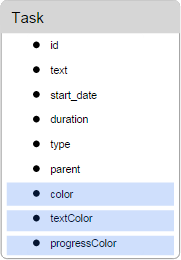

Tasks Coloring
Coloring tasks allows you to highlight specific tasks in order to pay user's attention to them.

To set a custom style for tasks, you can use one of the following approaches:
- To redefine the default tasks' template
- To set style values in the properties of the task object
- To generate styles from data
Redefining the task's template
To set a custom style for the task through a template, use the task_class template. For example, to color tasks depending on their priority, use the code as in:
Coloring tasks depending on their priority
gantt.templates.task_class = function(start, end, task){
switch (task.priority){
case "1":
return "high";
break;
case "2":
return "medium";
break;
case "3":
return "low";
break;
}
};
To style other aspects of tasks, use the templates listed in the Templates of the Timeline Area article.
A similar approach can be applied to links. Read more about it here.
Specifying style in the properties of a task object
To specify a custom style for a task, you can add 3 extra properties to the data object (or just some of them):
- color - the background color of the task bar
- textColor - the color of the text inside the task bar (don't affect tasks with the "milestone" type)
- progressColor - the color of the progress bar (by default, just makes it a bit darker than the task's color using the following style 'background-color: rgb(54, 54, 54); opacity: 0.2')

Note, these are special properties. By default, Gantt checks whether a task has them and if it does, applies the related values to the task's bar and text. Otherwise, the predefined colors are applied.
Setting the task's color in the data object
var tasks = {
data:[
{id:1, text:"Project #1", start_date:"01-04-2013", duration:18, color:"red"},
{id:2, text:"Task #1", start_date:"02-04-2013",
duration:8, color:"blue", parent:1},
{id:3, text:"Task #2", start_date:"11-04-2013",
duration:8, color:"blue", parent:1}
]
};
gantt.init("gantt_here");
gantt.parse(tasks);
gantt.getTask(1).color = "red"
Related sample: Specify inline colors for Tasks and Links
If, at least one of the properties is assigned, the task receives additional class - "gantt_task_inline_color".
You can use this class to override some other style for the task (use the ".gantt_task_line.gantt_task_inline_color" selector for the class):
.gantt_task_line.gantt_task_inline_color .gantt_task_progress {
background-color: rgb(54, 54, 54);
opacity: 0.2;
}
The properties can have any valid CSS color value, e.g. all of the following notations are valid:
task.color = "#FF0000";
task.color = "red";
task.color = "rgb(255,0,0)";
A similar approach can be applied to links. Read more about it here.
Loading colors with data
If colors are a part of your data which comes from the backend, e.g. when task color is associated with a stage or a resource assigned to a task which can't be hardcoded on the page, it may be a good solution to generate styles from your data manually.
Let's suppose that you have the following collection of users that can be assigned to tasks. Task styles should be defined by the properties of user records:
[
{"key":1, "label":"John", "backgroundColor":"#03A9F4", "textColor":"#FFF"},
{"key":2, "label":"Mike", "backgroundColor":"#f57730", "textColor":"#FFF"},
{"key":3, "label":"Anna", "backgroundColor":"#e157de", "textColor":"#FFF"},
{"key":4, "label":"Bill", "backgroundColor":"#78909C", "textColor":"#FFF"},
{"key":7, "label":"Floe", "backgroundColor":"#8D6E63", "textColor":"#FFF"}
]
In this use case, users and their colors are created and managed by different parts of the app and gantt generally doesn't know user ids and their colors in advance.
This is what you can do in this case:
- Define a named serverList for this collection
gantt.serverList("people");
Load options to the page, either by using the gantt data format or manually via a custom xhr
Once options are loaded, you can generate CSS styles from the data:
gantt.attachEvent("onLoadEnd", function(){
// use an arbitrary id for the style element
var styleId = "dynamicGanttStyles";
// in case you'll be reloading options with colors - reuse previously
// created style element
var element = document.getElementById(styleId);
if(!element){
element = document.createElement("style");
element.id = styleId;
document.querySelector("head").appendChild(element);
}
var html = [];
var resources = gantt.serverList("people");
// generate css styles for each option and write css into the style element,
resources.forEach(function(r){
html.push(".gantt_task_line.gantt_resource_" + r.key + "{" +
"background-color:"+r.backgroundColor+"; " +
"color:"+r.textColor+";" +
"}");
});
element.innerHTML = html.join("");
});
- After that you'll be able to assign related classes you generated from the task templates:
gantt.templates.task_class = function (start, end, task) {
var css = [];
if(task.owner_id){
css.push("gantt_resource_" + task.owner_id);
}
return css.join(" ");
};
Related sample: Assigning owners to tasks
Back to top